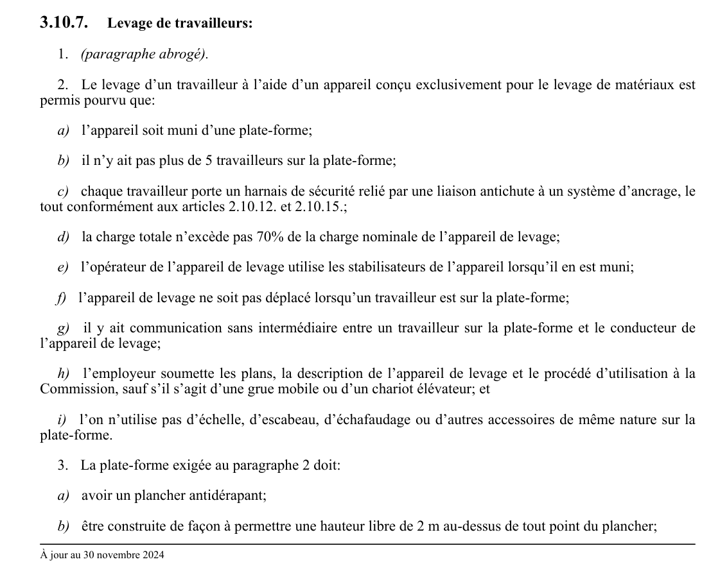

art-3.10.7-CSTC : levage de travailleurs
Levage de travailleurs: 1. (paragraphe abrogé). 2. Le levage d'un travailleur à l'aide d'un appareil conçu exclusivement pour le levage de matériaux est permis pourvu que: a) l'appareil soit muni d'une plate-forme; b) il n'y ait pas plus de 5 travailleurs sur la plate-forme;
🌐 LegisQuébec · 📄 PDF officiel
Texte officiel
Levage de travailleurs:
1. (paragraphe abrogé).
2. Le levage d’un travailleur à l’aide d’un appareil conçu exclusivement pour le levage de matériaux est permis pourvu que:
a) l’appareil soit muni d’une plate-forme;
b) il n’y ait pas plus de 5 travailleurs sur la plate-forme;
c) chaque travailleur porte un harnais de sécurité relié par une liaison antichute à un système d’ancrage, le tout conformément aux articles 2.10.12. et 2.10.15.;
d) la charge totale n’excède pas 70% de la charge nominale de l’appareil de levage;
e) l’opérateur de l’appareil de levage utilise les stabilisateurs de l’appareil lorsqu’il en est muni;
f) l’appareil de levage ne soit pas déplacé lorsqu’un travailleur est sur la plate-forme;
g) il y ait communication sans intermédiaire entre un travailleur sur la plate-forme et le conducteur de l’appareil de levage;
h) l’employeur soumette les plans, la description de l’appareil de levage et le procédé d’utilisation à la Commission, sauf s’il s’agit d’une grue mobile ou d’un chariot élévateur; et
i) l’on n’utilise pas d’échelle, d’escabeau, d’échafaudage ou d’autres accessoires de même nature sur la plate-forme.
3. La plate-forme exigée au paragraphe 2 doit:
a) avoir un plancher antidérapant;
b) être construite de façon à permettre une hauteur libre de 2 m au-dessus de tout point du plancher;
c) être munie d’un garde-corps métallique sur les 4 côtés. La traverse intermédiaire peut être remplacée par un treillis métallique;
d) avoir une largeur minimale de 500 mm;
e) offrir un facteur de sécurité minimum de 4 pour les éléments de structure;
f) être conforme aux plans demandés au sous-paragraphe h du paragraphe 2 de l’article 2.4.1;
g) si elle comporte des éléments soudés, être soudée par un soudeur détenant un certificat de classe «O» ou «V» du Bureau canadien de soudage ou un certificat de qualification en soudage sur appareils sous pression de classe A ou B délivré par le ministre de l'Emploi et de la Solidarité sociale; et
h) comporter une plaque indiquant la charge nominale de la plate-forme, le poids total de la plate-forme (incluant la charge nominale), le nom du fabricant, la date de fabrication et une référence aux plans soumis. L’identification du soudeur doit apparaître pour toute plate-forme fabriquée après le 23 avril 1980.
4. Lors du levage d’un travailleur à l’aide d’une grue mobile:
a) la grue doit être conforme à la norme Grues Mobiles ACNOR Z150-1974 et son supplément no. 1-1977;
b) la plate-forme doit être suspendue ou retenue de façon que:
i. l’inclinaison du plancher n’excède pas une pente de 1/5 dans les conditions de chargement les plus défavorables; et
ii. les éléments de suspension flexibles de la plate-forme et l’attache de suspension ou le pivot de retenue aient un facteur de sécurité minimum de 10;
c) un lien supplémentaire doit relier l’attache de suspension de la plate-forme à un point situé au-dessus du crochet; et
d) la grue mobile doit être munie d’un limiteur de fin de course haute de crochet ou d’une flèche permettant de lever la plate-forme à au moins 3 m au-dessus du palier de travail le plus élevé.
5. Lors du levage d’un travailleur à l’aide d’un chariot élévateur:
a) le chariot doit être conforme à la norme Low Lift and High Lift Trucks CSA B335.1-1977;
b) la plate-forme doit encadrer les fourches et être fixée au tablier du chariot;
c) la charge totale ne doit pas excéder 50% de la charge nominale du chariot;
d) lorsque la plate-forme est munie d’un contrôle de levage, l’arrêt du chariot doit pouvoir être commandé de ce contrôle et avoir priorité sur tout autre contrôle; et
e) lorsque la plate-forme n’est pas munie d’un contrôle de levage, le conducteur du chariot doit demeurer au poste de commande pendant la durée du travail.
Texte de l’article 3.10.7 CSTC, extrait de la couche texte du PDF officiel (page 81), sans OCR ni retouche. La capture ci-dessous et le PDF font foi.
{kind=link}

Toucher l'image pour l'agrandir🔗 CSTC.pdf : page 81 · texte à jour au 30 novembre 2024
📚 Source légale : R.R.Q., 1981, c. S-2.1, r. 6, a. 3.10.7; D. 1959-86, a. 22; D. 329-94, a. 52; D. 35-2001, a. 18; D. 606-2014, a. 16; D. 1393-2024, a. 14. · LégisQuébec
Voir aussi
- art. 3.10.6
- art. 3.10.8 (abrogé)
- ⚖️ Loi habilitante : LSST
- ↑ Section 3 : Chantiers de construction
Pages qui pointent ici (3)
- art-3.10.6-CSTC : accès aux équipements de construction Recueil législatif
- art-3.24.20-CSTC : espacement entre les lisses de bardage Recueil législatif
- CSTC : Section 3 : Chantiers de construction Recueil législatif